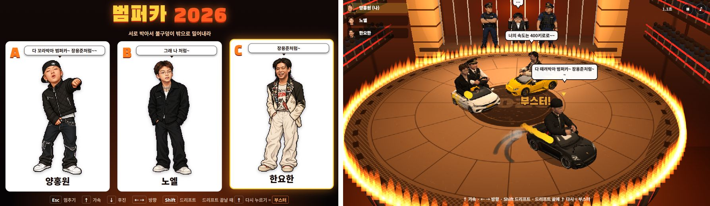
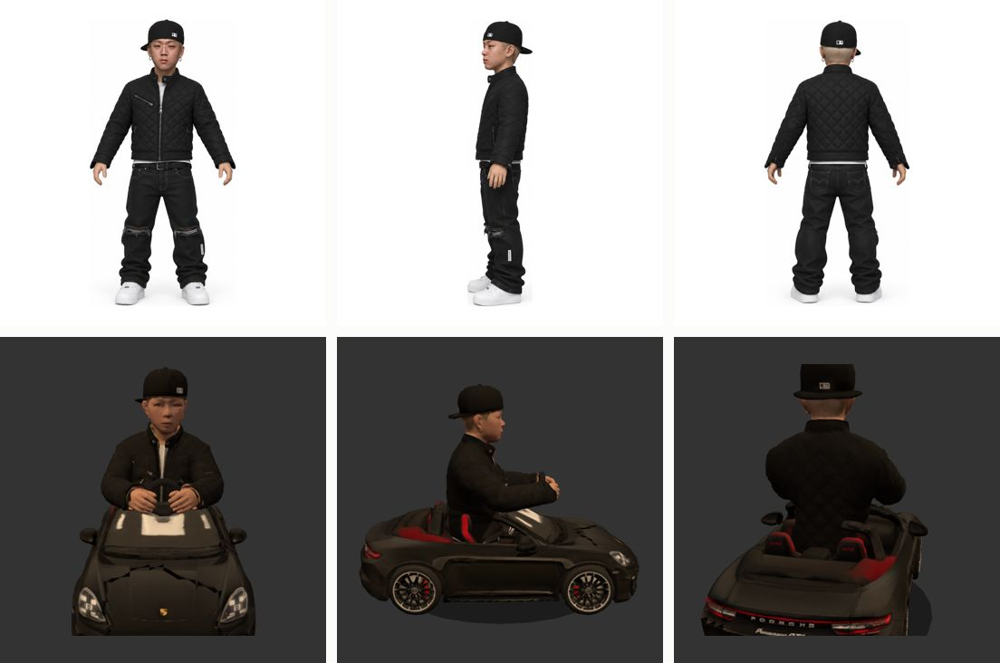
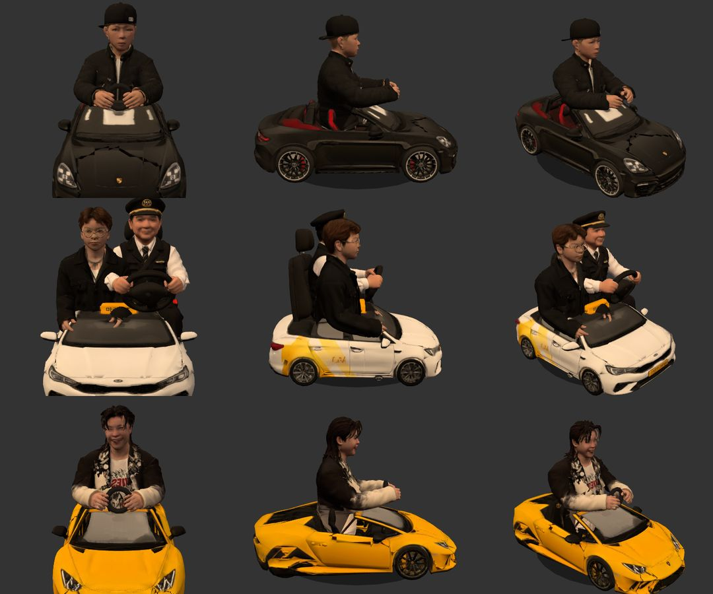
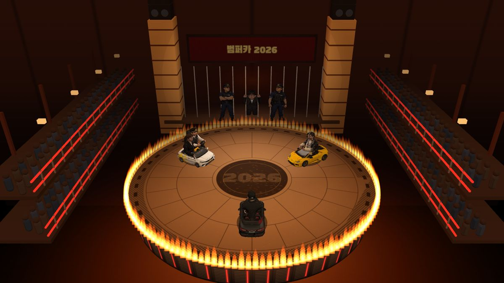
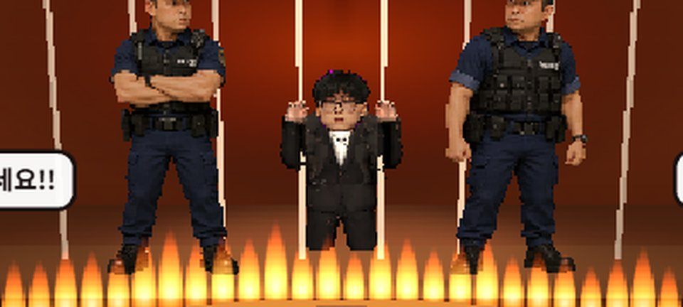

불구덩이로 둘러싸인 둥근 무대 위에 범퍼카 세 대가 있다. 한 대는 내가, 두 대는 봇이 몬다. 서로 들이받아 무대 밖으로 밀어내고, 마지막까지 남으면 이긴다. 무대 뒤 철창 안에는 한 명이 무릎을 꿇고 있고, 경찰 둘이 지킨다.
캐릭터는 원래 도트 그림이었다. 그 그림을 3D 모델로 만들어 차에 앉히고, 차는 드리프트하다 부스터를 켜고 들이받는다. PC 브라우저에서 키보드로 바로 하고, 설치는 없다. 주소는 gangmini.com/bumpercar. 소개 릴스는 이 글을 쓰는 지금 7만 조회를 넘었다. 이 글은 무엇으로 어떻게 만들었는지, 그리고 걸린 것들을 어떻게 풀었는지 적는다.

한눈에 보는 구조
게임 자체는 서버가 없다. 차의 움직임, 충돌, 봇까지 전부 방문자의 브라우저 안에서 돈다. 서버가 하는 일은 파일 22MB를 한 번 건네주는 것뿐이고, 그건 이 사이트가 이미 하고 있었다. 방문자 수를 세는 것만 다른 게임의 서버에 맡겼다.
← 옆으로 밀어 보기 →
무엇을 왜 골랐나
| 자리 | 고른 것 | 이유 |
|---|---|---|
| 그리기 | Three.js + 순수 JS | 무대·차·사람을 어느 각도에서든 그려야 한다. 게임 엔진은 받는 크기도, 배울 것도 많다. 필요한 건 그리기 하나였다 |
| 빌드 | 없음 | Three.js 파일을 받아 폴더에 넣고 브라우저의 import map 으로 부른다. 고치고 새로고침하면 끝 |
| 캐릭터 3D | Tripo (AI 3D 생성) | 그림 세 장(정면·옆·뒤)을 넣으면 모델이 나온다. 직접 모델링할 시간이 없다 |
| 모델 손질 | Python 스크립트 | 받은 모델을 그대로 못 쓴다(아래). 같은 손질을 8번 해야 해서 손이 아니라 코드로 |
| 배포 | Cloudflare Pages | 이 사이트가 이미 거기 있다. 폴더 하나 넣고 push. 받아 가는 양에 요금이 없다 |
| 방문 집계 | 기존 Fly.io 서버 | "오늘 몇 명"은 누군가 기억해야 한다. 이미 돌고 있는 서버에 이름 한 줄을 더했다 |
Three.js — 브라우저의 3D 기능(WebGL)을 쓰기 쉽게 감싼 자바스크립트 라이브러리. 장면·카메라·조명·모델을 객체로 다룬다.
import map — import "three" 같은 이름을 실제 파일 주소로 이어 주는 브라우저 기능. 번들러 없이도 라이브러리를 모듈로 부를 수 있다.
정적 / 동적 — 서버가 파일만 건네주면 정적, 서버가 계속 켜져서 계산하거나 기억하면 동적. 화면이 움직이는지와는 상관없다. 이 게임은 화면은 바쁘지만 서버 입장에선 정적이다.
2D 에서 3D 로, 세 번 갈아탔다
처음엔 2D 였다. 차 그림이 방향별로 그려진 한 장짜리 시트를 잘라서, 차가 도는 각도에 가장 가까운 그림을 보여 줬다.
← 옆으로 밀어 보기 →
② 단계에서 차는 매끄럽게 돌았지만 사람은 판이라 늘 카메라를 본다. 차가 옆으로 꺾어도 사람은 정면이고, 멀어질 때만 뒤통수 그림으로 바뀐다. 차와 함께 도는 사람을 만들려면 사람도 3D 여야 했다.
그림 세 장으로 3D 사람 만들기
도트 원본을 바탕으로, 캐릭터마다 팔을 살짝 벌린 A 자 자세의 정면·옆·뒤 그림(턴어라운드)을 한 장에 뽑았다. 이걸 세 장으로 나눠 Tripo 에 넣으면 3D 모델이 나온다.

← 옆으로 밀어 보기 →
처음엔 무료 플랜으로 한 명을 시험해 봤다. 무료로 내보낼 수 있는 모델(H2.5)은 얼굴이 뭉개져서 누군지 알아볼 수 없었고, 유료 모델(H3.1)에서야 얼굴이 나왔다. 이 게임은 얼굴이 전부라 거기서 결제를 정했다.
넣는 방법도 중요했다. 정면 한 장만 넣으면 옆과 뒤는 Tripo 가 상상해서 채운다. 정면을 넣고 "멀티 뷰 생성"을 누른 뒤, 옆과 뒤 칸을 내가 가진 그림으로 갈아 끼웠다. 뒷머리와 재킷 등판이 원본과 같아진다. 세 장의 키와 발 높이가 다르면 Tripo 가 헷갈려서, 나누는 스크립트가 셋을 같은 크기의 흰 정사각형 가운데에 놓는다.
리토폴로지 — 생성된 모델의 삼각형을 다시 짜서 개수를 줄이는 것. 갓 나온 모델은 삼각형이 수십만 개라 브라우저에서 여러 개를 띄우기 무겁다.
리깅 — 모델 안에 뼈대를 넣는 것. 뼈를 돌리면 살이 따라 움직여서, 서 있는 모델을 앉히고 팔을 핸들로 뻗게 할 수 있다.
glTF / GLB — 3D 모델의 웹 표준 형식. GLB 는 모양·텍스처·뼈대를 파일 하나에 묶은 것이다.
받은 모델을 그대로 못 썼다
Tripo 에서 받은 GLB 를 게임에 넣고 팔을 핸들 쪽으로 돌려 봤다. 팔이 안 굽고 몸통째 돌았다. 열어 보니 세 군데가 어긋나 있었다.
| 증상 | 원인과 고친 것 |
|---|---|
| 뼈가 발밑을 축으로 돎 | 뼈마다 있어야 할 위치·회전 값이 전부 비어 있었다. 관절 자리는 다른 칸(inverse bind matrix)에만 들어 있었다. → 그 행렬을 거꾸로 풀어 뼈마다 자리를 다시 적었다 |
| 뼈대가 몸과 따로 놂 | 뼈대 전체가 몸과 90° 돌아가 있었다. 팔뼈가 앞을 향하는 식이다. → 0·90·180·270° 를 다 돌려 보고 손뼈가 손 위치에 가장 가까운 각도를 고른다 |
| 팔다리가 안 굽음 | 모든 살이 엉덩이·가슴 뼈 두 개에만 붙어 있었다. → 살을 다 떼고 처음부터 다시 붙였다 (아래 그림) |
| 파일이 무거움 | 모델 하나가 9MB 남짓. 대부분이 화면에선 티도 안 나는 금속·거칠기 텍스처였다. → 바탕색 텍스처만 2048 JPEG 로 남겼다. 8개 합 76MB → 19MB |
← 옆으로 밀어 보기 →
이 손질은 모델 8개에 똑같이 해야 했다. 그래서 GLB 파일을 직접 열어 바이트를 고쳐 쓰는 파이썬 스크립트(slim_glb.py, 270줄)로 만들었다.
원본은 따로 보관하고, 스크립트를 다시 돌리면 언제든 같은 결과가 나온다. 뼈가 없는 차와 기사님은 텍스처만 줄인다.
스키닝 — 살(꼭짓점)마다 "어느 뼈를 얼마만큼 따라갈지"를 적어 두는 것. 이게 잘못되면 뼈를 돌려도 살이 안 따라오거나 엉뚱하게 늘어난다.
inverse bind matrix — 뼈가 쉬는 자세일 때의 위치를 거꾸로 적은 행렬. 원래는 계산을 돕는 보조 값인데, Tripo 파일에선 관절 위치가 여기에만 남아 있었다.
차에 앉히기
서 있는 모델을 앉히는 건 뼈마다 "이쪽을 가리켜라"를 적은 표로 했다. 각도를 숫자로 맞추는 대신 방향을 주면, 모델마다 팔 길이가 달라도 손이 핸들 쪽으로 간다. 표는 세 개다. 운전석(양홍원·한요한), 조수석(노엘 — 팔을 내리고 앉는다), 철창 속 무릎 꿇기.

- 다리를 접었다. 장난감 차라 보닛이 낮아서 앉힌 무릎이 차를 뚫고 나왔다. 허벅지 뼈를 0.08배로 줄여 다리를 차 안에 숨겼다. 위에서 내려다보는 카메라라 다리는 원래 안 보인다.
- 핸들은 손을 따라간다. 핸들을 정해진 자리에 두지 않고, 앉힌 뒤 두 손의 가운데로 옮긴다. 모델마다 팔 길이가 달라도 손이 허공을 잡지 않는다.
- 기사님 키는 노엘에 맞췄다. 모델마다 원래 크기가 제각각이라, 모자 꼭대기가 노엘 정수리와 같은 높이가 되게 줄였다.
게임은 어떻게 도나
물리는 위에서 내려다본 평면에서 계산하고, 그릴 때만 3D 로 옮긴다. 범퍼카는 뛰지 않으니 높이가 필요 없고, 평면 계산이 훨씬 단순하다.
← 옆으로 밀어 보기 →
stepCar를 거치니 봇이 반칙할 수 없고, 봇이 내 차를 대신 몰게 하는 것도 한 줄이다.
- 시간을 1/120초씩 끊는다. 화면이 60Hz 든 144Hz 든 물리는 같은 간격으로 진행된다. 화면이 잠깐 멈췄다 돌아와도 차가 벽을 뚫고 순간이동하지 않는다.
- 3D 를 일부러 거칠게 그린다. 화면 해상도의 75% 로 그려서 늘린다. 매끈한 3D 가 도트 그림 말풍선·얼굴 옆에서 혼자 튀지 않게, 결을 맞추려는 것이다.
- 말풍선은 3D 가 아니다. 3D 위에 투명한 2D 캔버스를 한 장 더 깔고, 차의 3D 위치를 화면 좌표로 바꿔 그 자리에 그린다. 글자는 2D 가 선명하다.
고정 시간 간격(fixed timestep) — 물리를 "지난 프레임에서 흐른 시간"이 아니라 늘 같은 간격으로 진행하는 것. 간격이 들쭉날쭉하면 같은 충돌도 기기마다 결과가 달라진다.
박기의 물리 — 한 판이 끝나게
두 차가 부딪치면 먼저 서로의 빠르기를 나눠 갖고(반발 0.75), 거기에 맞은 쪽이 무조건 밀려나는 몫을 더 얹는다. 실제 물리만 따르면 비슷한 속도로 박았을 때 둘 다 제자리에 서 버려서 아무도 안 떨어진다.
밀려나는 힘 = (기본 80 + 들이받은 빠르기 × 0.35)
× 부스터 중이면 2.0
× 열기 (40초부터 1.0 → 1.8)
맞은 뒤엔 0.3~0.55초 동안 미끄러지다 선다← 옆으로 밀어 보기 →
무대는 원래 반지름 440 이었다. 해 보니 차가 방향을 틀 공간이 좁아서 620 으로 넓혔더니, 이번엔 판이 안 끝났다. 서로 밀어도 넓은 무대 안에서 멈춰 버린다. 밀려나는 몫을 55 에서 80 으로 올리고, "열기"를 넣어 오래 버틸수록 세게 튕기게 했다.
드리프트 끝에 ↑ = 부스터
← 옆으로 밀어 보기 →
봇도 같은 규칙으로 부스터를 쓴다. 처음엔 봇이 부스터를 거의 안 써서(1분에 한 대당 0.1번) 맞아도 시원하지 않았다. 상대를 향해 꺾어야 할 때 드리프트를 더 자주 걸고, 들이받기 직전에 짧게 드리프트했다가 부스터를 켜게 바꿨다. 1분에 7번 남짓이 됐다.
숫자는 화면 없이 30판 돌려서 정했다
"판이 너무 길다", "봇이 부스터를 안 쓴다" 같은 말은 손으로 몇 판 해 봐서는 고쳤는지 알 수 없다. 게임에 시험용 손잡이를 남겨 뒀다.
window.__game.sim(초)는 화면을 안 그리고 물리만 빠르게 돌린다. 주소에 ?auto=1을 붙이면 내 차도 봇이 몬다.
이걸 화면 없는 크롬(헤드리스)에서 30판씩 돌려 평균 경기 시간, 첫 탈락 시각, 부스터 횟수를 쟀다. 숫자를 바꿀 때마다 다시 쟀다.
헤드리스 브라우저 — 창 없이 도는 브라우저. 코드로 페이지를 열고, 키를 누르고, 화면을 찍는다. 이 프로젝트는 그래픽 카드 없이 3D 를 그리는 모드(SwiftShader)로 띄웠다.
철창 속 D — 다섯 번 고쳤다

무대 뒤 철창 안의 D 는 움직이지 않는 캐릭터인데, 시간은 가장 많이 먹었다. 카메라가 위에서 비스듬히 내려다보니, 철창 뒤 얼굴이 잘 안 보였다.
| 시도 | 문제 |
|---|---|
| 서 있기 | 얼굴이 화면 위로 잘려 나갔다 |
| 앉아서 창살 잡기 | 바닥이 아니라 의자에 앉은 것처럼 보였다 |
| 무릎 꿇기 | 자세는 됐는데 가로 창살이 얼굴을 가렸다 |
| 가로 창살 빼고, 가운데만 비우기 | 가운데만 뻥 뚫려서 감옥 같지 않았다. 3D 얼굴은 멀리서 뭉개졌다 |
| 고른 간격 + 도트 얼굴 | 통과 |

- 얼굴만 원래 그림으로 바꿨다. D 는 움직이지 않으니 3D 얼굴일 이유가 없다. 원본 도트 그림에서 머리만 오려(분홍 배경 지우고, 옆에 붙은 주먹 떼어 내고) 3D 머리 자리에 붙였다. 3D 머리를 아주 작게 접어 숨기려 했더니 검은 덩어리가 생겨서, 머리는 그대로 두고 얼굴 그림이 늘 맨 위에 그려지게 했다.
- 철창 안에 조명을 따로 달았다. 무대 조명만으로는 검은 정장이 배경에 묻혔다. 철창 안 벽을 밝은 색으로 바꾸고, 앞과 위에서 비추는 빛을 하나씩 더했다.
경찰은 3D 가 아니다 — 그런데 판의 종류가 문제였다
경찰 둘은 가만히 서 있기만 하니 그림 판으로 충분했다. 처음엔 늘 카메라를 보는 판(스프라이트)을 썼는데, 경찰이 뒤로 누워 철창 뒤로 넘어가 보였다.
← 옆으로 밀어 보기 →
바닥에 수직으로 세운 판으로 바꾸니 바로 섰다. 카메라가 거의 정면에서 보니 납작한 판이라는 게 티가 나지 않는다. 경찰 그림은 분홍 배경의 한 장에서 오렸고, 테두리에 번진 분홍기를 빼고, 무대의 붉은 조명에 맞게 색을 살짝 눌렀다.
"이상하면 되돌릴게" — 태그 18개
이 게임은 내가 보고 말로 고치는 식으로 만들었다. "카메라를 멀리", "머리를 크게" 같은 건 해 보기 전엔 좋을지 모른다. 그래서 큰 변경마다 git 태그를 남겼다. 마음에 안 들면 그 이름으로 바로 돌아간다.
← 옆으로 밀어 보기 →
실행할 때마다 터미널 창이 쌓였다
이 게임은 JS 모듈이라 파일을 더블클릭해서는 안 열리고, 작은 로컬 서버가 있어야 한다. 그래서 서버를 띄우고 브라우저를 여는 실행 파일(실행.bat)을 만들어 뒀다.
그런데 실행할 때마다 검은 창이 하나씩 늘어났다. 확인해 보니 같은 포트(8020)에 서버가 6개 떠 있었다.
- 창이 쌓인 이유. 서버를 창이 있는 파이썬으로 띄웠다. 서버는 안 끝나니 창도 안 닫힌다.
- 서버가 쌓인 이유. 보통은 이미 쓰는 포트에 두 번째 서버가 못 붙는다. 그런데 파이썬 기본 웹 서버는 "주소 재사용" 옵션을 켜고, 윈도우에서는 이 옵션이 켜져 있으면 같은 포트에 여러 개가 붙어 버린다.
창 없는 파이썬(pythonw)으로 띄우고, 주소 재사용을 끈 작은 서버 스크립트를 따로 만들었다. 이미 떠 있으면 포트를 못 잡고 조용히 끝나니, 몇 번을 눌러도 서버는 하나다.
덤으로 배운 것: bat 파일에 한글을 쓰면 cmd 가 다른 인코딩으로 읽어서 줄이 깨진다. 실행 파일은 영어로만 쓴다.
사이트에 올렸더니 빈 화면
게임 폴더에는 손질 전 원본 모델(76MB)과 2D 시절 그림도 있다. 게임이 실제로 부르는 파일만 골라 사이트 저장소로 복사하는 스크립트를 만들었다. 31개, 22MB. 올리고 실제 주소로 들어가 보니, 제목과 조작법만 있고 캐릭터 카드가 없었다.
← 옆으로 밀어 보기 →
내 컴퓨터에서는 파일이 바로 옆에 있어서 한 번도 못 본 화면이다. 카드 자리에 "불러오는 중… n%" 막대를 넣었다. 처음엔 받은 파일 개수로 퍼센트를 셌는데, 인터넷을 느리게 흉내 내서 돌려 보니 이랬다.
개수로 세기 0% 0% 0% 0% 0% 0% 0% 0% 0% 0% 0% 11% 33% 58% 60% 78% 78% → 완료
바이트로 세기 0% 0% 6% 13% 19% 26% 32% 42% 48% 55% 61% 68% 75% 79% 83% 87% 94% → 완료
(0.5초 간격)19개 파일을 한꺼번에 요청하니 다 같이 받다가 거의 같이 끝난다. 개수로 세면 5초 동안 0% 에 멈춰 있다가 끝에서야 올라간다. 고장처럼 보이는 건 똑같다. 3D 모델을 받는 동안 오는 "지금 몇 바이트 받았다" 신호를 모아 퍼센트를 내게 바꿨다. 이제 막대가 고르게 찬다.
예전 비프리 게임 기록에 "그림 받는 동안 진행 표시"를 남은 일로 적어 뒀었다. 같은 구멍에 한 번 더 빠졌다.
몇 명이 왔나 — 정적 사이트에서 세기
릴스가 돌기 시작하자 접속자 수가 궁금해졌다. 그런데 이 게임은 Cloudflare 가 파일만 건네주는 정적 사이트라, 방문을 세고 기억할 내 서버가 없다.
비프리 게임 때 이미 만들어 둔 길이 있었다. 페이지가 열릴 때 bamti-bomb 서버의 1×1 투명 그림을 한 번 부르고, 서버가 그 요청을 센다.
서버 쪽은 받는 사이트 목록에 bumpercar 한 줄을 더하고 관리 페이지에 표 하나를 더한 게 전부다.
// 게임 index.html — gangmini.com 에서 열렸을 때만 (내 컴퓨터 테스트는 안 셈)
if (/(^|\.)gangmini\.com$/.test(location.hostname))
new Image().src = "https://bamti-bomb.fly.dev/beacon.gif?s=bumpercar&r=" + Date.now();
// 서버 — 아무 이름이나 받으면 남이 내 볼륨을 파일로 채울 수 있어서 미리 적어 둔다
const BEACON_SITES = {
bfree: { file: "visits-bfree.json", title: "학사모 비프리의 아파트 건설현장" },
bumpercar: { file: "visits-bumpercar.json", title: "범퍼카 2026" },
};- 그림으로 부르는 이유.
<img>요청은 다른 주소로 가도 CORS 허락이 필요 없다. 실패해도 게임엔 아무 영향이 없다. - 개인정보. IP 를 그대로 저장하지 않는다. 그날만 쓰는 소금과 섞어 해시로 만든 뒤 "그날 몇 명"이라는 숫자만 남는다. 쿠키도 없다.
- 배포 순서. 서버를 먼저 올려야 신호가 버려지지 않는다. 그런데 서버 배포 도구의 로그인이 끊겨 있었고, 로그인은 키보드 입력을 받는 터미널에서만 돼서, 그 한 단계는 터미널을 따로 열어 직접 했다.
CORS — 브라우저가 "다른 주소의 서버에 요청해도 되나"를 서버에게 묻는 규칙. 다만 그림·스크립트를 불러오는 태그는 예전부터 예외라, 응답을 읽지 않는 신호용으로는 그림 요청이 가장 간단하다.
만드는 컴퓨터가 먼저 지쳤다
마무리하던 날, 다 만든 릴스를 저장하려는데 공간이 없었다. C 드라이브가 1GB 남아 있었다. 프로젝트 파일은 다 합쳐 1GB 정도라 범인이 아니었다.
가장 큰 건 윈도우의 가상 메모리 파일(pagefile.sys)이었다. 28GB 까지 불어나 있었다.
메모리 16GB 중 크롬이 12GB 넘게 쓰고 있었는데, Tripo 처럼 무거운 3D 탭이 여러 개 열려 있었고, 확인용 헤드리스 크롬도 그래픽 카드 없이 3D 를 그리느라 메모리를 먹었다.
윈도우는 모자란 메모리를 디스크로 메꾸고, 한 달째 재부팅을 안 해서 그 파일이 줄어들 기회가 없었다.
잠시 뒤 다시 재 보니 18.9GB 로 저절로 줄어 있었다. 남아 있던 설치 임시 파일 3.4GB 를 지운 것과 합쳐 빈 공간이 1GB 에서 13.7GB 가 됐다. 3D 를 만드는 일은 결과물보다 만드는 과정이 컴퓨터를 더 먹는다.
남은 일
- 폰에서는 못 한다. 조작이 키보드뿐이다. 릴스에 "PC 전용"이라고 적어 뒀지만, 이 사이트에 오는 사람 대부분은 폰이다. 화면 버튼(핸들·가속·드리프트)이 첫 번째다
- 모델 압축(Draco · meshopt) — 18.6MB 를 절반 아래로
- 모델을 다 받기 전에 카드부터 띄우기 — 고르는 동안 나머지를 받는다
- 링크를 공유했을 때 뜨는 미리보기 이미지
정리
| 고른 것 | 한 줄 이유 |
|---|---|
| Three.js, 빌드 없음 | 필요한 건 그리기 하나. 고치고 새로고침이면 끝 |
| Tripo + 내 그림으로 옆·뒤 고정 | 상상으로 채운 뒷모습보다 내 그림이 정확하다 |
| 모델 손질을 스크립트로 | 같은 수술을 8번. 원본을 두고 언제든 다시 돌린다 |
| 방향으로 앉히기 | 모델마다 팔 길이가 달라도 손이 핸들로 간다 |
| 평면 물리 + 1/120초 | 뛰지 않는 차에 높이는 필요 없다. 기기가 달라도 같은 충돌 |
| 밀려나는 몫 + 열기 | 실제 물리대로면 판이 안 끝난다 |
| 화면 없이 30판 | "고쳤다"를 느낌이 아니라 숫자로 |
| 움직이지 않는 건 그림 | D 의 얼굴과 경찰. 3D 보다 원본이 낫다 |
| 태그마다 되돌릴 자리 | 해 보기 전엔 모르는 것들을 겁 없이 해 본다 |
| 바이트로 세는 막대 | 개수로 세면 막대도 멈춰 보인다 |
비프리 게임에서 오래 걸린 건 폰이었고, 이번에 오래 걸린 건 AI 가 만든 것과 내가 원하는 것 사이의 틈이었다. Tripo 는 그림 세 장으로 몇 분 만에 사람을 만들어 주지만, 뼈는 비어 있고 살은 두 군데에만 붙어 있었다. 철창 속 얼굴은 다섯 번 만에 자리를 잡았다. 생성은 빨라졌고, 그걸 게임 안에서 "그럴듯하게" 만드는 일은 여전히 손이 간다. 그 손을 덜 가게 해 준 건 되돌릴 수 있다는 안심과, 숫자로 확인하는 습관이었다.
게임은 gangmini.com/bumpercar, 게임 파일은 gangmini_branding/bumpercar, 방문 집계 서버는 bamti-bomb에 있다.